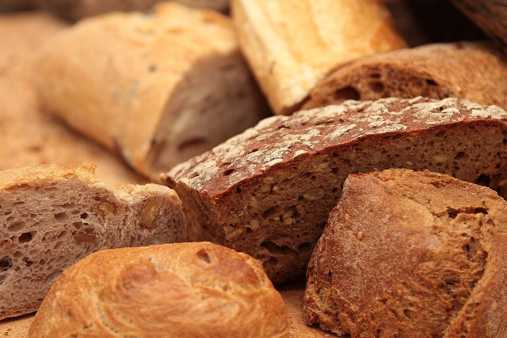
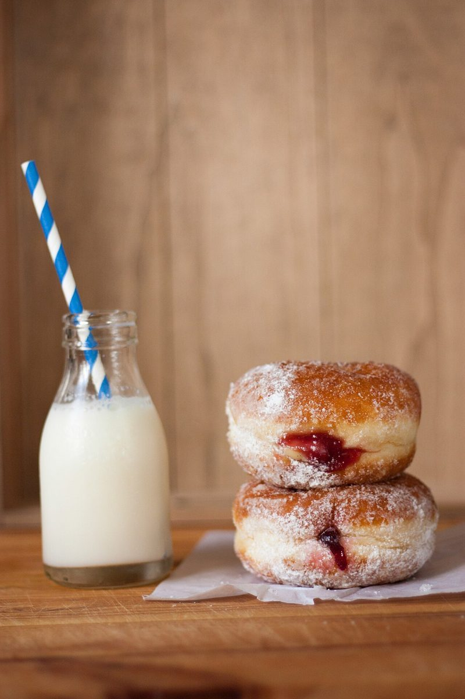

No.01R
ひび割れの丸い山
- 質感
- ばりっ
- 色味
- 焦げ茶と小麦色
ベーカリー / 〒444-0858 愛知県岡崎市上六名3丁目11-2
13 CARDSPACK
ササゴベーカリーのご案内ページです。確認できているのは所在地・電話番号・Instagramのアカウントだけ。営業時間やメニューは準備中です。代わりに、パンと粉にまつわる質感のクローズアップを、13枚のカードにして並べました。


制作側の連想
お店の名前の由来は分かりません。制作側は、カタカナの並びの軽やかさから、同じ台紙のカードを集めて並べる遊びを連想しました。そこでこのサイトは、写真を「質感」「色味」「レア度」つきのカードに見立てる作りにしています。お店の理念や由来とは無関係な、制作側の連想です。レア度は写真の見た目につけた遊びの印で、商品の等級ではありません。
DECK 01-13
写真はお店や商品ではなく、国外または撮影地不明のフリー素材です。カードの名前・質感・色味は、写真の見た目に制作側がつけたものです。








INFO
| 所在地 | 〒444-0858 愛知県岡崎市上六名3丁目11-2 |
|---|---|
| 電話 | 0564-83-7820 |
| 営業時間 | 準備中 |
| 定休日 | 準備中 |
| ご予約 | 準備中 |
| 駐車場 | 準備中 |
| SNS | Instagram @sasagobakery |